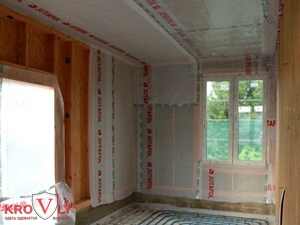
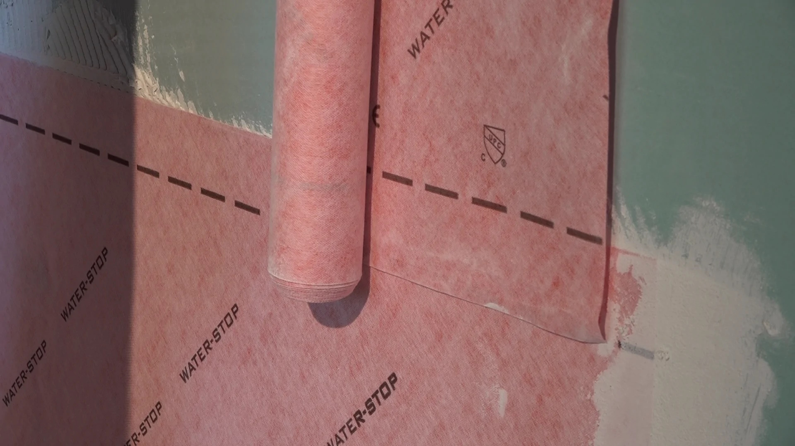

Dampfsperre & Feuchteschutz: Was man beim Bauen unbedingt beachten muss
Feuchtigkeit ist einer der häufigsten Gründe für Schäden im Innenausbau: Schimmel, nasse Dämmung, modrige Gerüche, lose Farbe oder sogar beschädigte Holzständer. Viele Probleme entstehen, weil Dampfsperre und Feuchteschutz nicht richtig ausgeführt wurden. Hier erklären wir einfach und praxisnah, worauf es wirklich ankommt.
1. Dampfsperre oder Dampfbremse – was ist der Unterschied?
Beide schützen die Dämmung vor feuchter Innenluft, arbeiten aber unterschiedlich:
Dampfsperre
Eine beinahe komplett dichte Folie (meist Polyethylen). Sie lässt praktisch keinen Wasserdampf durch. Wird verwendet bei:
- Decken unter unbeheizten Räumen
- Bad, Sauna, Spa
- Flachdächern mit sensiblen Schichten
Dampfbremse
Lässt begrenzt Feuchtigkeit diffundieren. Ideal für:
- Wände im Holzständerbau
- Container- und Modulbau
- Dachschrägen / ausgebauter Dachstock
Welche Variante richtig ist, hängt vom Aufbau ab. Im Zweifelsfall gilt: in Wohnräumen eher Dampfbremse, in Feuchträumen eher Dampfsperre.
2. Warum Feuchtigkeit in der Wand so gefährlich ist
Warme Innenluft enthält viel Feuchtigkeit. Dringt sie in kalte Bauteile ein, kondensiert Wasser in der Dämmung oder am Holz. Die Folgen:
- nasse Dämmung verliert ihre Wirkung
- Schimmel entsteht schon bei 70–80% relativer Feuchte
- Holzkonstruktionen können faulen
- metallene Containerwände beginnen zu rosten
Eine korrekt verlegte Dampfbremse schützt dauerhaft vor solchen Schäden.
3. Die häufigsten Fehler beim Einbau
- Löcher und Risse: Steckdosen, Schrauben oder Kabeldurchführungen nicht abgeklebt.
- Folie falsch herum verlegt: viele Systeme haben eine definierte warme Seite.
- Überlappungen nicht verklebt: Feuchtigkeit findet schon durch 1–2 mm Spalt ihren Weg.
- Keine luftdichte Ebene: die Folie muss umlaufend dicht sein – auch an Boden, Decke und Fenstern.
- Kombination falscher Materialien: z. B. Dampfsperre in einer Wand, die nach aussen diffusionsoffen sein muss.
4. Feuchteschutz in Bad und Küche
In Räumen mit hoher Luftfeuchtigkeit reicht eine Dampfbremse oft nicht aus. Hier braucht es zusätzlich eine Abdichtung:
- Flüssigabdichtung („Dichtanstrich“)
- Dichtbänder in Ecken
- Abdichtmatten unter Fliesen
5. Container & Modulbau: besondere Herausforderungen
Container haben kalte Stahlwände. Ohne korrekte Dampfbremse entsteht Kondenswasser – oft täglich. Wichtige Punkte:
- nicht zu diffusionsdicht bauen (Stahl kühlt extrem schnell aus)
- Hinterlüftung einplanen, wenn möglich
- Dämmung gut anpressen, keine Luftspalten
- alle Stöße der Folie zuverlässig verkleben
6. Fazit: Ein kleines Detail mit grosser Wirkung
Eine korrekt verlegte Dampfbremse ist unsichtbar – bis sie fehlt. Dann entstehen teure Schäden, die oft erst Jahre später bemerkt werden. Wer sauber arbeitet, alle Durchdringungen abdichtet und die richtige Folie wählt, schützt Wände, Decken und Dämmung dauerhaft.